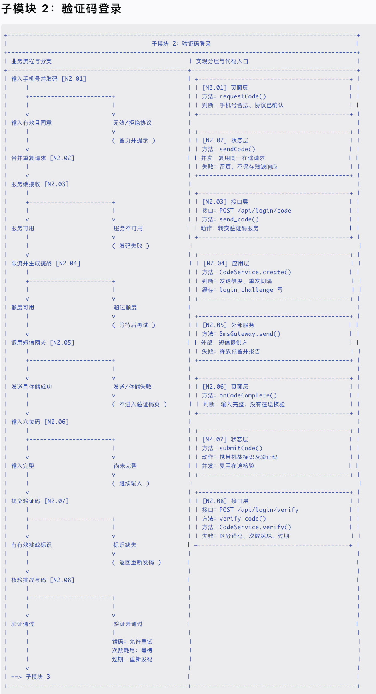
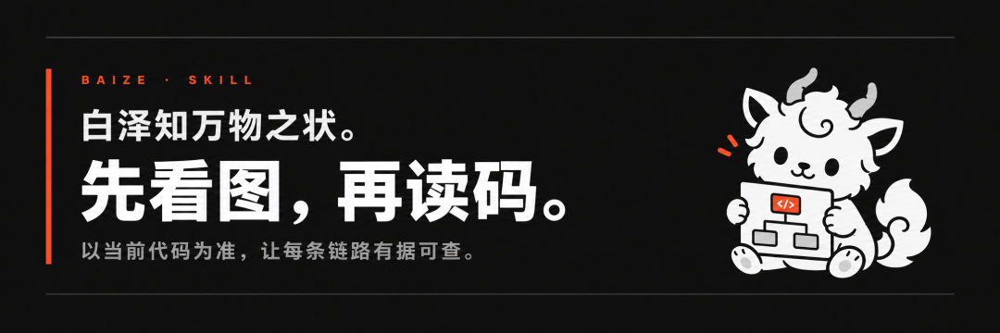

大家好，这里是 AGI智码。
专注于AI技术前沿分享，用最接地气的话讲最前沿的科技是我的专长，让每个人都能玩转AI是我的初心~
前言
设想一个很常见的场景。下午六点，产品经理在群里问：
提示：“用户明明收到了验证码，为什么有时还是登录失败？”
开发先看验证码接口，测试重新走正常流程，AI 则从 code、verify 和 login 等关键词开始搜索。大家手里都有线索，却很难马上回答几个连在一起的问题：发码是否真的成功，挑战标识保存在哪里，错码、次数耗尽和过期分别会走到哪里，重新发码后旧状态会不会继续生效？
这类尴尬在 AI 编程普及后没有消失。代码生成得更快了，系统却未必更容易理解。
AI 把“写出来”变便宜了，把“说清楚”变贵了
以前开发一个功能，团队的大部分时间花在写代码上。现在把需求交给 AI，页面、接口、状态管理甚至测试样例，很快就能铺开。
速度上来以后，另一个成本也冒了出来：谁还能解释这套系统为什么这样运行？
Vibe Coding，也就是用自然语言让 AI 快速生成和修改代码，很容易制造一种错觉：页面能打开、按钮能点击、接口返回成功，这件事似乎就结束了。
可真实项目通常不是一条直线：
用户点击按钮 ↓ 前端校验与状态更新 ↓ 调用后端接口 ↓ 服务层判断业务条件 ↓ 写数据库、发消息或启动后台任务 ↓ 另一个消费者继续处理 ↓ 成功、失败、取消、超时、重试分别去往不同结果 |
AI 可以很快改完其中一段，却不一定知道整条链路。一次对话结束后，下一次排查很可能又从全项目搜索开始。
久而久之，代码的增长速度超过了团队理解代码的速度。真正需要警惕的并不是“AI 写了代码”，而是大家还没看清上下游，就接受了一句“应该没问题”。
同一个系统，同一张地图，四种读法
系统一复杂，产品、测试、开发和 AI 面对的其实是同一件业务，只是各自提出的问题不同。
通常由开发和 AI 建立、维护地图；产品和测试直接阅读同一份 Markdown、参与评审，不需要先安装脚本工具。技术负责人还可以借此讨论模块边界和共用能力，新成员则可以先看全景，再进入自己负责的部分。
没有稳定坐标时，AI 只能从关键词开始找：打开候选文件、猜入口、继续补查上下游。下一次会话换了上下文，还可能再来一遍。README 能解释安装，接口文档能解释请求，架构图能解释系统边界，但它们通常回答不了“支付失败以后为什么没有恢复库存”这种跨层问题。
我做 白泽.skill，就是想让团队和 AI 共用一张从业务问题通往实现细节的地图。
白泽是什么：让人和 AI 看懂同一套业务
白泽是一套 Agent Skill。它指导 AI 沿着当前源码，把本次确认范围内、分散在页面、接口、后台任务和数据中的实现，整理成产品、测试、开发与 AI 都能逐层阅读的业务地图。
说得直白一点，它不是在线画图平台，也不是自动代码图谱。它产出的是放在项目里的 Markdown 业务链路文档：图上讲业务，节点号连接当前源码。
接手旧项目是典型场景，但它也适用于持续迭代的新系统、跨前后端业务、原生端、定时任务和异步链路。白泽不是另一个自动写代码工具，也不替代源码搜索、静态分析或测试平台。
重点：重点：白泽的目标不是生成一张一次性流程图，而是把经过源码核对的业务知识，沉淀为团队与 AI 共享、可复查、可持续维护的项目资产。
白泽把项目中的业务理解分成几层：
业务全景 ↓ 模块总览 ↓ 子模块详图 ↓ 源码锚点：文件 + 行号 + 方法 / 接口 / 数据标识 |
你可以把它理解成一套可以逐层展开的地图：
- 业务全景
先看本次已确认范围内的入口、交接和结果； - 模块总览
说明当前阶段接收什么，又交给下一步什么； - 子模块详图
展开判断、成功与失败分支； - 源码锚点
像门牌号，告诉人和 AI 应该打开哪个文件、哪个方法继续核对。
这里的“全景”不等于整个项目已经扫描完成。它只对本次确认的业务范围负责，并明确标出外部边界和未核对内容。简单业务也不必强行分很多层。
白泽可以从一条重要业务开始，再逐步补齐它与其他业务、共用能力的关系。例如多个业务都依赖登录态、权限、消息或任务调度，这些关系应该在全景中被看见，而不是藏在某一个目录里：
业务 A ─┐ 业务 B ─┼──> 登录态 / 权限 / 消息 / 任务调度 业务 C ─┘ |
这里的“共用能力”必须由多条已经确认的业务链路共同指向，并且能落到源码锚点。不能因为目录名里写着 common，就由 AI 自动认定它是共用能力；白泽负责把已核对的关系呈现出来，不替团队决定系统应该怎样拆分。
先看产物长什么样：一个虚构的登录格式样例
抽象解释容易让人误以为白泽只是画一张普通流程图。下面这张图来自仓库的《账号登录》格式样例，展示的是“子模块 2：验证码登录”的完整详图。它只是业务全景中的一个子模块，不代表整个账号业务，更不代表整个项目已经覆盖。
注意：注意：样例中的业务、文件路径、方法和行号均为虚构，没有配套源码，不是已经验收的登录方案。它只用于展示白泽的文档结构和阅读方式。

图片信息较密，建议点击查看大图。
图片左边是业务流程和分支：输入手机号、合并重复请求、服务端发码、额度判断、短信网关、验证码输入、挑战核验，以及错码、次数耗尽、过期等失败出口。
图片右边是实现分层和代码入口。同一个节点号把两边连起来：产品和测试沿左边阅读，开发和 AI 从节点进入右边，再打开当前源码核对。
Login.vuerequestCode() | ||
auth.tssendCode() | ||
POST /api/login/codesend_code() | ||
CodeService.create() | ||
SmsGateway.send() | ||
VerifyCode.vueonCodeComplete() | ||
auth.tssubmitCode() | ||
CodeService.verify() |
图里的右栏只是实现摘要。一个业务节点往往不只对应一个函数，精确文件、行号和多层入口会放在图下的源码锚点表中。以 N2.08 为例，完整样例同时指向：
backend/routes/code_login.py:40verify_code() | |
backend/services/code_service.py:65CodeService.verify() | |
backend/storage/challenges.py:45ChallengeStore.count_attempt() | |
backend/errors/login.py:10 | |
app/pages/VerifyCode.vue:80resendCode() |
围绕同一个 N2.08，四类读者看到的是同一件事的不同侧面：
产品核对错码、次数耗尽和过期后的产品结果是否符合需求； 测试整理错码重试、次数耗尽、挑战过期和重新发码场景； 开发从节点进入路由、服务、存储、错误定义和页面处理位置； AI 优先读取这些锚点及其上下游，而不是先在全项目搜索 login。
一张图不能证明某次请求真实走过这些分支。产品仍要对照有效需求，测试仍要运行验证，故障排查仍要结合日志、状态或复现。白泽提供的是一条可读、可查、能回到源码继续核对的路线。
完整样例还包括一键登录和手机号登录与会话两个子模块，可以在文末“推荐阅读”中打开查看。
白泽怎样避免“AI 自己脑补一条完整链路”
我不希望白泽只是把 AI 的猜测画得更漂亮，所以它有几条明确的规则：
- 当前代码说了算。
旧文档、需求和经验只能提供线索，不能代替本次核对。 - 有什么就画什么。
只有前端就画前端，只有后端就画后端，不把缺失部分补成想象中的全栈。 - 不确定的内容写进“未核对”。
不把猜测伪装成确定结论。 - 关键位置停下来问人。
首次项目设置、业务入口和探查范围，都需要确认。 - 经验必须服从证据。
出现反证时降级或标记失效，不为了让经验库显得丰富而保留错误结论。
这些停顿不是仪式。它们让人随时知道 AI 查过什么、接下来准备查哪里，哪些结论已经确认，哪些还只是候选。
地图建好以后，怎样查和维护
白泽自带的几个动作各有边界：
refs | ||
refs --git | ||
check | ||
check --fix |
源码关系复杂时，可以选装 codebase-memory-mcp：MCP 查询“定义在哪、谁调用了它、它又调用谁”，白泽再把核对后的实现组织成业务地图。MCP 不是前置依赖，也不保证固定提速或固定节省 Token；覆盖不足时仍要读当前源码。
业务问题 → 白泽确认范围 → MCP 或文本搜索找实现关系 → 读取当前源码核对 → 整理成流程与锚点 |
完整命令和接口检查限制放在仓库 README。白泽的目标是减少无关阅读，但不会省掉源码、日志和测试验证。
按设计流程使用时，它会先问，再开始画
你不必先知道正式业务名、接口名或函数名。一个现象就能成为入口：
/baize-skill 用户收到验证码后还是登录失败，帮我理一下 |
按白泽规则，首次使用时 AI 应先只读了解项目，起草项目设置，再由你确认项目层次。之后每次探查都要确认候选入口、起点、终点、分支、分层和切分范围；即使只有一个候选入口，也不能跳过确认。
描述现象或业务 ↓ 只读认识项目 → 确认项目设置（首次） ↓ 列出候选入口和依据 → 确认入口 ↓ 确认起点、终点、分支和范围 ↓ 追当前源码 → 画图 → 检查 → 标出未核对项 |
设置保存在 Skill 目录的项目文件中，不是上传到某个后台。如果以后需要调整，AI 应先提出建议，得到确认后再改。具体客户端和模型是否严格遵守这些步骤，仍需要使用者留意。
地图建立以后，还要跟着代码变化同步：
改代码前：文件或方法 → refs → 候选影响范围 改代码后：refs --git → 重读源码 → 更新链路 → check |
查询默认只读。生成或维护地图，不等于授权 AI 修改业务代码，也不等于授权提交或推送。多几次停顿，是为了避免 AI 从错误入口出发，最后画出一张逻辑完整、方向却错误的图。
两种持续维护，不是一回事
docs/链路全景/ | references/探查经验/ | |
探查经验分为单次观察、已稳定复现、待复核和失效。同一个案例重复运行不算多次独立印证；遇到反证，旧经验要降级或失效。它不是模型训练，也不是无人值守的后台学习。白泽本身没有常驻服务，明确要求只读时也不会把经验写回文件。
它适合什么项目
白泽更适合这些情况：
产品、测试、开发与 AI 需要共同理解一套业务； 一条业务跨越页面、状态、接口、服务和异步任务； 多条业务复用登录态、权限、消息或任务调度等共用能力； 项目长期迭代，需要持续维护业务知识和源码锚点； 接手缺少业务文档的旧项目，或需要向新成员交接； 同一个关键词能搜出很多相似实现，AI 经常重新寻找入口。
如果项目只有几个短流程，维护完整地图的收益可能有限。白泽也不会因为画了图，就自动知道某次线上请求真实经过了哪些分支；真实故障仍要结合日志、状态记录或测试复现。
如何开始
负责建图的开发者需要在项目里安装白泽。Claude Code 使用 .claude/skills/baize-skill/，Codex 使用 .agents/skills/baize-skill/；其他客户端的目录和调用方式见仓库 README。
工具脚本需要 Node.js 22+，只使用内置模块，不需要执行 npm install。产品和测试不必安装脚本，已有地图时直接从项目的 docs/链路全景/README.md 开始阅读即可。
从一条链路开始
AI 已经让做出功能变得更容易。项目进入长期维护后，麻烦往往出在另一头：
谁能说清这段代码在业务里负责哪一步？ 谁知道失败和重试会走向哪里？ 谁能在修改之前找到可能受影响的链路？ 下一位开发者或下一次 AI 会话，能不能沿着证据继续查，而不是重新猜？
白泽想做的，不只是帮某一次排查找到代码，而是把每次核对过的理解留下来：
重点：重点：先看图，再读码。让业务有脉络，让代码有坐标，再把这些理解持续维护成团队与 AI 共用的业务资产。
项目地址：
GitHub：https://github.com/caoguanjie/baize-skill
如果你正面对一个“功能能跑，但没人能完整说清”的系统，可以先从一条重要业务开始。不必一次画完整个项目，先把已确认范围内的入口、分支、交接和结果查清楚，再逐步补齐它与其他业务、共用能力的关系。
